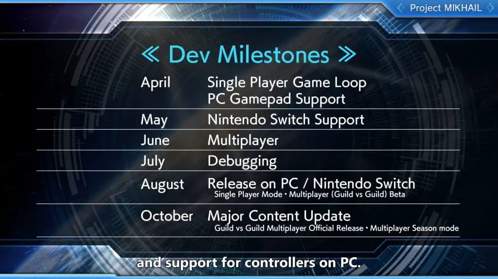

Today developer Anchor hosted a special Muv-Luv announcement stream that detailed the plans for Muv-Luv in 2021, headlined by changes to Project Mikhail.
Unlike the previous entries in the Muv-Luv series, which have been Visual Novels, Project Mikhail is an action game where you control a Tactical Surface Fighter Mech to battle the alien BETA. Originally Project Mikhail was set to come out on PC and mobile devices in April but is now the team will launch the new game on PC and Switch instead in August.
The cause of the delay is because age is making a variety of changes to the game, introducing a new producer, and during the stream, they also showed new gameplay of Mikhail.

Along with the changes to Mikhail, they announced changes to the release schedule of Muv-Luv projects: the Story Lab would be postponed to Spring 2021, but they announced Muv-Luv Verse, a “virtual theme park” for Muv-Luv.
There are still no release dates on Project Immortal, Muv-Luv Unlimited: The Day After 04 Resonate, or Muv-Luv Integrate, the sequel to Alternative.
In case you missed it, check out our review of Muv-Luv Unlimited: The Day After, where we touch on each of the recently released episodes in the west.
You can watch the entire stream below: